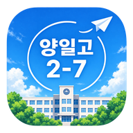

시간표, 공지, 출결, 학습계획서, 야자 출석, 상담 신청까지 이 앱 하나로 해요. 처음이라면 ① 처음 시작하기만 먼저 따라 하세요.
📱 앱 열기공지, 개인 메시지, 상담 확정, 야자 출석, 학습계획서 마감 안내가 전부 알림으로 와요. 알림을 안 켜면 중요한 연락을 놓쳐요.
요일 버튼을 눌러 그날 시간표를 봐요. 이동수업은 교실이 초록색으로 표시돼요.
선택과목을 잘못 골랐다면 시간표 맨 아래 선택과목 다시 입력하기를 누르세요.
지각·결석·조퇴·결과가 생기면 바로 알려주세요. 선생님 휴대폰에 알림이 가요.
| 출결 내용 | 같이 적을 것 |
|---|---|
| 지각 | 예상 등교 시간 |
| 조퇴 | 조퇴 예정 시간 |
| 결과 | 빠지는 교시 (예: 3~4교시) |
| 결석 | 아래 결석계도 꼭 작성 |
사유 구분은 질병인정미인정기타 중에서 고르고, 사유는 짧게 적어요. (예: 감기, 병원 진료)
지각을 알린 날, 학교에 도착하면 📍 학교 도착했어요를 누르세요. 학교 안인지 위치로 확인한 뒤 도착 시간이 선생님께 전달돼요.
점수는 성적이 아니라 계획대로 실천했는지로 매겨요. 4주가 한 시즌이에요.
학습계획서 실천 달성률이 높은 학생에게 아래 혜택을 줘요. 자세한 기준은 따로 공지할게요.
🌙 야자 탭 → 내 야자 출석 QR 보기. 교실 태블릿 카메라에 비추면 "띠링" 소리와 함께 출석돼요. 종이 QR 스티커도 똑같이 쓸 수 있어요.
입실과 퇴실을 둘 다 찍어야 해요. 입실은 블록 시작 10분 전~15분 후, 퇴실은 끝나기 10분 전~15분 후에만 인정돼요.
| 블록 | 시간 | 요일 |
|---|---|---|
| 7교시 | 15:40~16:30 | 월·수 |
| 8교시 | 16:40~17:30 | 월~금 |
| 야간1 | 18:30~20:00 | 월~금 |
| 야간2 | 20:00~21:30 | 월~금 |
야자 탭에서 날짜와 빠지는 블록을 고르고 사유를 적어요. 당일까지 낼 수 있고, 지난 날짜는 선생님께 직접 말해야 해요.
사유를 낸 블록은 출석률 계산에서 빠져요. 부당한 사유는 선생님이 반려할 수 있고, 반려되면 결석으로 계산돼요.
이번 달 출석률이 90% 이상이면 야자 탭에 🏅 배지가 붙어요.
출석률 = 출석 ÷ (신청한 블록 − 사유 낸 블록)
| 언제 | 내용 |
|---|---|
| 일 20:00 월 18:00 | 📝 주간 계획서를 아직 안 냈을 때 |
| 평일 15:30 | 📚 오늘 공부 계획 안내 |
| 블록 5분 전 | 📍 야자 입실 QR 찍기 |
| 마지막 블록 끝나기 5분 전 | 🚪 야자 퇴실 QR 찍기 |
| 매일 22:30 | ✔️ 오늘 공부 실행 체크를 안 했을 때 |
| 일 19:00 | 🪞 주간 회고를 안 냈을 때 |
| 상담 날 08:00 | 🗓 오늘 상담 안내 |
그래서 따로 카톡이나 전화를 안 해도 선생님이 바로 알 수 있어요. 급한 일은 지금처럼 전화해도 돼요.
① 공지사항 탭에서 알림 켜기를 눌렀는지 ② 휴대폰 설정에서 알림이 허용돼 있는지 확인하세요. 아이폰은 홈 화면에 추가한 아이콘으로 열어야 알림이 와요.
앱을 완전히 껐다가 다시 켜보세요. 그래도 그대로면 주소 끝에 ?v=2처럼 아무 숫자를 붙여서 열어보세요. 화면 맨 위 "2학년 7반" 옆 작은 글씨가 버전이에요.
선생님께 말하면 처음 비밀번호로 되돌려줘요. 다시 로그인하면 새 비밀번호를 정하면 돼요.
휴대폰 설정에서 브라우저(또는 앱)의 위치 권한을 허용하고, 창가나 건물 밖에서 다시 눌러보세요. 그래도 안 되면 선생님께 직접 말하면 돼요.
화면 밝기를 올리고 태블릿 카메라에서 한 뼘 정도 떨어져서 비춰보세요. "신청자가 아니에요"가 뜨면 그 블록을 신청하지 않은 거라 선생님께 말해주세요.
마감이 지나면 그 주 계획은 잠겨요. 정말 사정이 있었다면 선생님께 말해주세요. 예외로 풀어줄 수 있어요.